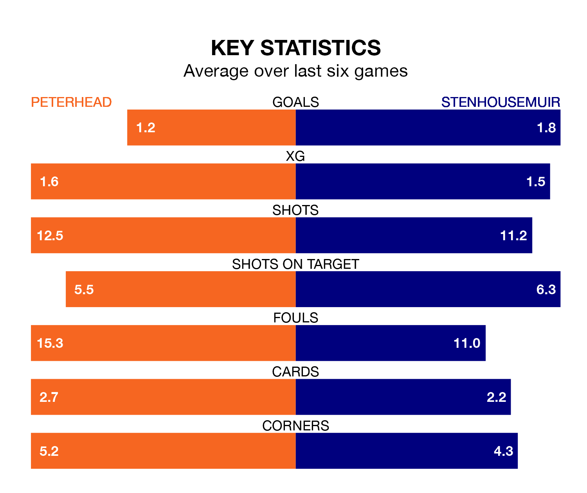

League Two's top two sides face each other at the Balmoor Stadium in Saturday's kick-off, when second-placed Peterhead host Stenhousemuir.
Peterhead have picked up 11 wins and three draws from 21 games so far this season, and sit 16 points below the visitors going into the 3pm match.
The Warriors, meanwhile, have won 16 and drawn four, picking up 52 points.
With 38 goals in 21 games so far this season, Stenhousemuir are the league's highest scorers with 1.8 goals per game. And they are conceding fewer than average, letting in 13 goals at a rate of 0.6 per game.
Peterhead are also above average scorers, with 1.7 goals per game, compared to a league average of 1.4. They have conceded 1.1 goals per game.
The Blue Toon are in bad form in League Two, with one win and a draw from their last six games.
With six wins and no losses over that period, the Warriors's form is much better – they have taken 18 points from 18, compared to the hosts' four.
In Matthew Aitken, the away team have the league's most on-form striker so far this season. He has notched 13 goals in 21 appearances.
Peterhead's top scorers, with six goals each, are Conor O’Keefe and Kieran Shanks.
In the last 10 years, Peterhead and Stenhousemuir have played each other on 20 occasions. Peterhead won seven of them, Stenhousemuir 10, and they drew three times.
On average, the Blue Toon scored 1.6 goals and the Warriors 1.6 in those matches.
Their last meeting was on November 14, when Stenhousemuir won 2-0 at home.
Peterhead's last match was on January 20, a 2-2 draw against East Fife, with Jordon Brown and Scott Ross getting the goals for the Blue Toon.
Stenhousemuir beat Stranraer 1-0 last time out, also on January 20, with Kyle Girvan on the scoresheet.
Updated: 09:07 (UTC), 24/01/24